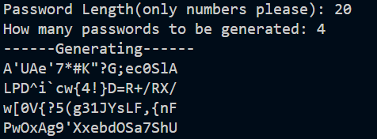
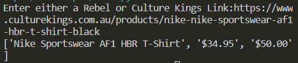

Grapple IO
A Grapple Gun Game built in C# with the Unity Framework.
An applied use of math, physics and programming was used in order to make the grapple gun function and simulate correctly in the 3D environment.
Note the password for the website is "password".
Password Generator
With all the recent hacking and phishing scandals its imperative to maintain secure access to your account, and an important factor that contributes to the security of an account is the password used
. This password generator written in python does just that, allowing you to state a password length and an amount of passwords to be generated.

This script was built in python using several security based libraries.
Culture Kings WebScraper
A web scraper built in python that can track sale prices among various retail stores such as culture kings and rebelsport This program required extensive knowledge as to how an html website is built and how to access certain tags and classes from another point on the internet.
